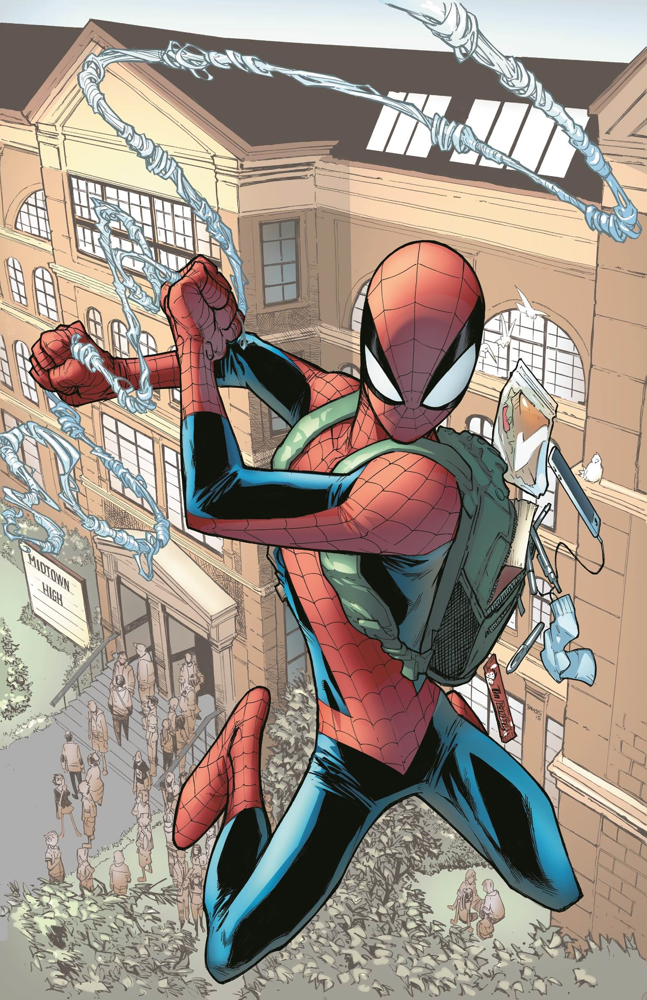

Peter Parker fue el primer héroe juvenil en ser protagonista y no un acompañante, lidiando con problemas cotidianos como el acoso escolar, la tía May enferma y la falta de dinero mientras combatía el crimen.